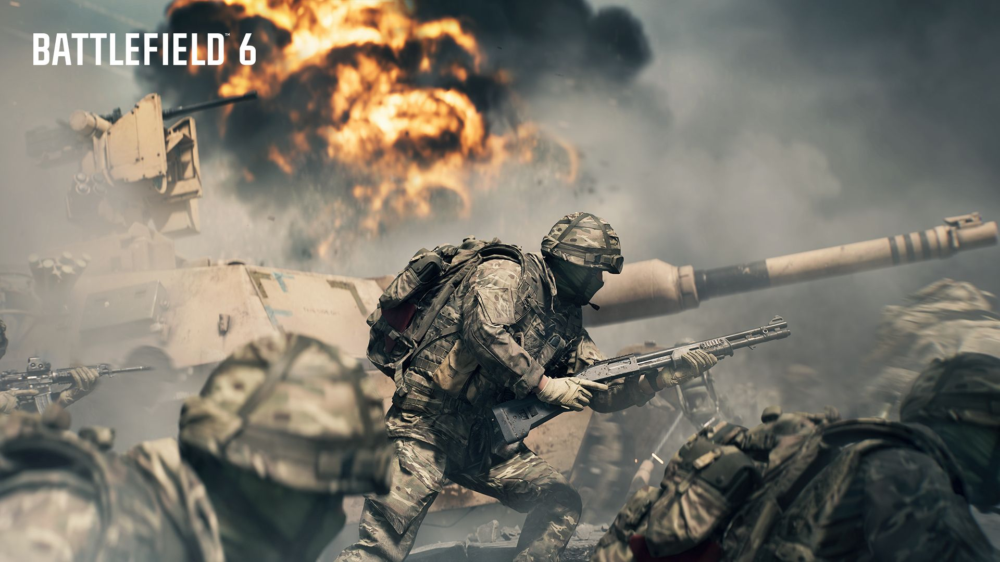
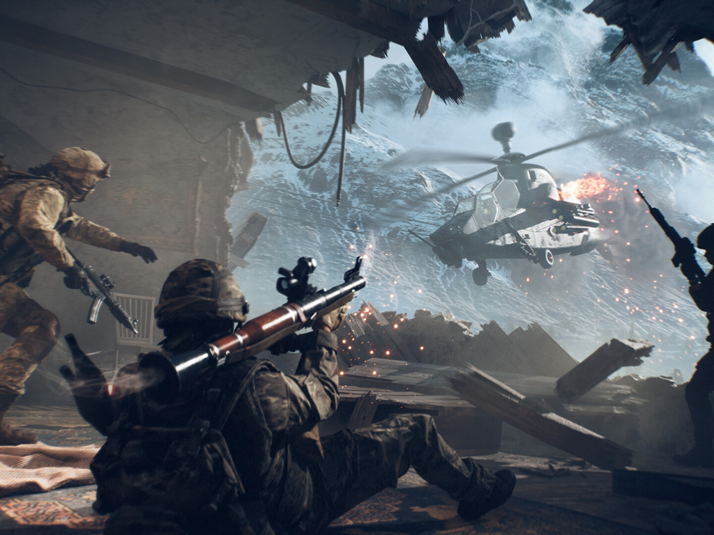
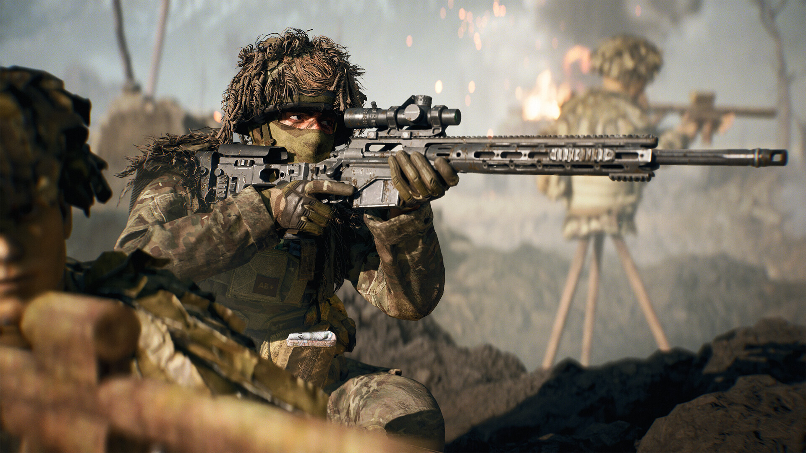
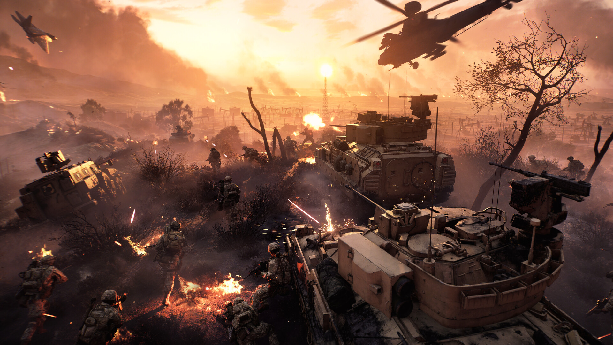
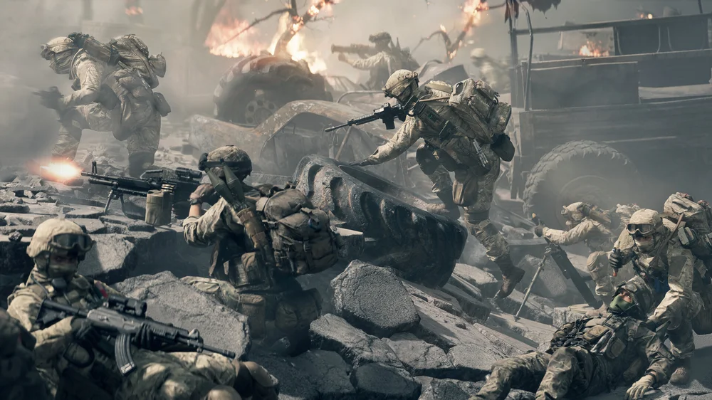

.jpg)


Battlefield é uma série de jogos de tiro em primeira pessoa focada em combate multijogador em larga escala, conhecida por seus mapas grandes, destruibilidade do ambiente e uso de veículos



🗺️ Cenário e Campanha
Ambientação: O jogo se passa entre os anos de 2027 e 2028, focando em um grande conflito entre uma OTAN fragmentada e uma empresa militar privada chamada Pax Armata. Retorno da Campanha: Diferentemente do Battlefield 2042, o Battlefield 6 apresenta uma Campanha completa para um jogador e com um tom mais sério e cinematográfico, lembrando os aclamados Battlefield 3 e Battlefield 4. Unidade Dagger 13: A história acompanha a unidade de elite Dagger 13, lutando em locais icônicos ao redor do mundo, como Cairo, Gibraltar e Nova York.
💥 Jogabilidade e Funcionalidades
O jogo é celebrado por resgatar a sensação clássica de Battlefield com grandes avanços tecnológicos: Classes Clássicas: O sistema de Especialistas do 2042 foi substituído pelo sistema de Classes tradicional (Assalto, Engenheiro, Suporte e Reconhecimento), dando funções claras e definidas para cada jogador em campo. Destruição Tática Avançada: O recurso de destruição do cenário (Levolution) foi aprimorado. Agora, a destruição é mais reativa e precisa, permitindo que você enterre esquadrões sob escombros e use a demolição de estruturas como uma vantagem estratégica. Multiplayer em Grande Escala: Os modos de jogo icônicos como Conquista, Ruptura e Investida retornam com a jogabilidade de guerra total característica da série. Battlefield Portal Aprimorado: O modo Portal, que permite criar e jogar batalhas personalizadas usando conteúdo de jogos anteriores da franquia, foi remodelado e aperfeiçoado, oferecendo um grande sandbox criativo para a comunidade.
⚔️ Battlefield RedSec (Battle Royale Gratuito)
Modo Gratuito: Junto com a primeira temporada do jogo, a EA lançou Battlefield RedSec, um modo Battle Royale totalmente gratuito para jogar (free-to-play). Foco: O RedSec é focado em sobrevivência em larga escala, seguindo o tema de guerra total e o trabalho em equipe com esquadrões. O Battlefield 6 marcou um retorno de sucesso para a franquia, com foco no combate de infantaria intenso, destruição tática e um robusto modo multiplayer baseado em classes.